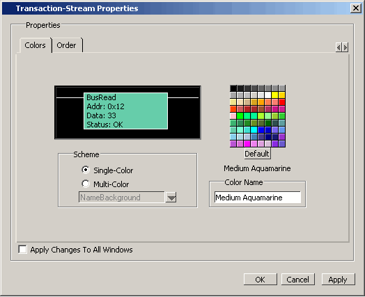

Customizing the
color in the Wave window overrides colors set with add_color() (in
the design code) during simulation
Use the GUI or the tr color command to change the color of one or more transactions
or streams.
Note: Whether the color
is specified using add_color() or in the Wave window, the color
name specified is interpreted by Tcl and the local window manager
at debug time. For example, “red” can appear different from machine
to machine, depending on whether or not a system is performing gamma
correction.
Procedure
- Right-click a transaction
or stream name to open a popup menu.
- Select Transaction Properties
to open the Transaction-Stream Properties dialog box (Figure 1).
Figure 1. Transaction Stream
Properties Dialog Box
- Select the Colors tab.
- In the Scheme area of the
dialog box, select:
Single-Color to apply the
color change to all elements of the stream or transaction.
Multi-Color to apply different
colors to specific elements of the stream or transaction. When you
select one of the following elements and select a color, the color
is applied to that element:
InactiveLine —
Line between transactions
BorderLine —
Border around the transaction
NameBackground —
Background behind the transaction name text
NameText —
Text for the transaction name
AttributeBackground —
Background behind the attribute text
AttributeText —
Text for attribute
- Choose a color from the palette
or enter a color in the field (for example, light blue) and
- Select Apply to
leave dialog box open, or OK to apply and
close it.
The element, transaction or
entire stream of transactions changes to the chosen color.